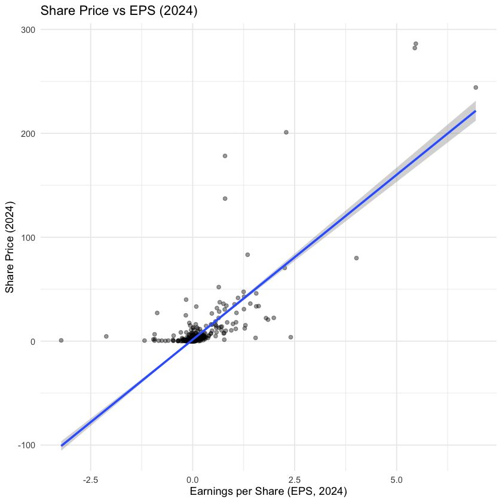
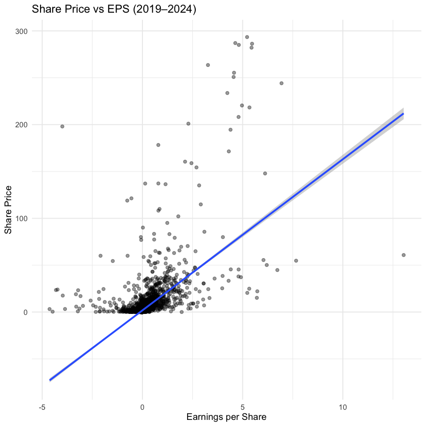
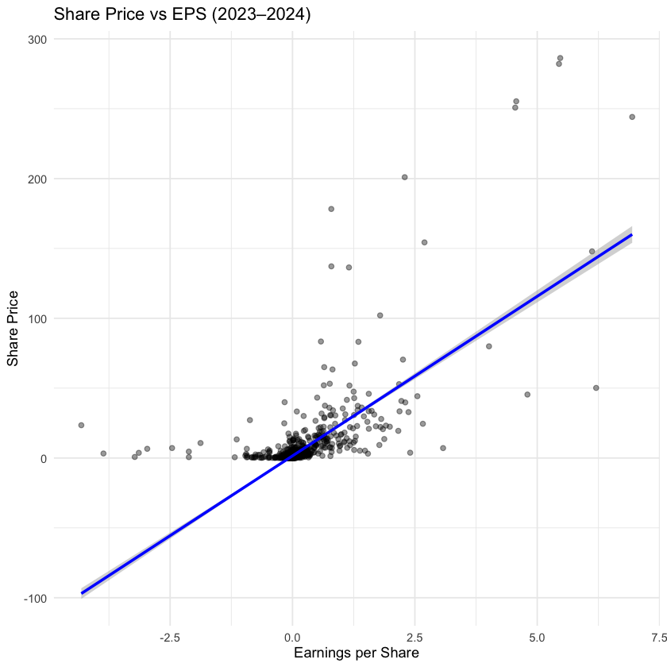
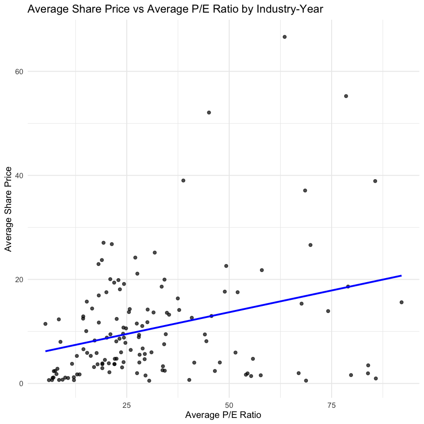

Tutorial Topic 05 Set 01 - Shaping and Joining Data for Business Analytics¶
Learning Goals¶
By the end of this tutorial, you should be able to:
- Explain the difference between tidy and messy data, and use
pivot_longer()to tidy up wide data. - Summarize and visualise financial data, and explain why tidy formats make analysis easier.
- Plot and interpret relationships between share price and earnings per share (EPS).
- Combine data from multiple tables using joins (
left_join(),inner_join(),anti_join()), and understand what each join includes or excludes.
The Business Challenge¶
The Topic: What shapes how the market values Australian firms?¶
Investors do not just care about whether a company is profitable. They also care about how much they are paying for those earnings.
In this tutorial, we will work with data on large Australian firms to explore a simple question: How strongly are share prices and valuation ratios related to company earnings, and how do those patterns vary across firms and industries?
To answer that question, we first need to prepare the data. Some of the financial variables are stored in a messy wide format, and other information is spread across separate files. So before we can analyse anything, we need to:
- reshape the data into tidy form
- join together firm, industry, and valuation data
- check what information is missing after those joins
Two key variables in today’s tutorial are:
-
EPS tells us how much profit a company earns for each share.
-
The P/E ratio tells us how much investors are willing to pay for each dollar of earnings.
By the end of the tutorial, you will have built and explored a dataset that lets you compare firms and industries using share prices, earnings, and valuation ratios.
R packages for today¶
library(tidyverse) # collection of packages for data manipulation and visualization
Prepare these Exercises before Class¶
Prepare these exercises before coming to class. Plan to spend 30 minutes on these exercises.
Exercise 1: Identifying Issues with Untidy Data¶
We will start with a deliberately messy version of the ASX stock price data. Run the following code to load the dataset.
asx_prices_messy <- read_csv("data/asx_prices_messy.csv")
Then inspect a subset of the data:
asx_prices_messy |>
select(gvkey, conm, price_2023, price_2024, eps_2023, eps_2024) |>
head(10)
| gvkey <chr> | conm <chr> | price_2023 <dbl> | price_2024 <dbl> | eps_2023 <dbl> | eps_2024 <dbl> |
|-------------|---------------------------|------------------|------------------|----------------|----------------|
| 272690 | 1300 SMILES LTD | NA | NA | NA | NA |
| 327267 | 1414 DEGREES LTD | 0.040 | 0.067 | -0.0091 | -0.0107 |
| 349318 | 29METALS LIMITED | 0.375 | NA | -0.7986 | NA |
| 284698 | 3D ENERGI LIMITED | 0.056 | 0.070 | 0.0129 | -0.0075 |
| 346142 | 3D METALFORGE LIMITED | NA | NA | NA | NA |
| 317959 | 3P LEARNING LTD | 1.270 | 1.020 | 0.0230 | -0.2077 |
| 253413 | 3Q HOLDINGS LTD | NA | NA | NA | NA |
| 339106 | 4DMEDICAL LTD | 0.450 | 0.675 | -0.1049 | -0.0971 |
| 314650 | 4DS MEMORY LTD | 0.135 | 0.084 | -0.0038 | -0.0031 |
| 324960 | 5E ADVANCED MATERIALS INC | 2.260 | 0.540 | -0.7000 | -1.1800 |
(a)
In what ways is this data frame not tidy? What principles of tidy data are violated?
(b)
Use the starter code below to compute the average share price across all firms for 2023 and 2024.
asx_prices_messy |>
summarise(
# Add up all 2023 share prices
sum_prices_2023 = sum(YOUR_CODE_HERE, na.rm = TRUE),
# Add up all 2024 share prices
sum_prices_2024 = sum(YOUR_CODE_HERE, na.rm = TRUE),
# Count how many firms have a non-missing share price in 2023
count_firms_2023 = sum(!is.na(price_2023)),
# Count how many firms have a non-missing share price in 2024
count_firms_2024 = sum(!is.na(price_2024))
) |>
mutate(
# Combine the 2023 and 2024 price totals
total_sum = YOUR_CODE_HERE + YOUR_CODE_HERE,
# Combine the number of non-missing firm prices across both years
total_count = count_firms_2023 + count_firms_2024
) |>
mutate(
# Divide the total sum of prices by the total number of firms
avg_price_23_24 = YOUR_CODE_HERE / YOUR_CODE_HERE
) |>
select(avg_price_23_24)
(c)
Why does the approach in part (b) not scale well as more years are added?
(d)
The code below plots share price against earnings per share in 2024.
asx_prices_messy |>
filter(eps_2024 > -5) |>
ggplot(aes(x = eps_2024, y = price_2024)) +
YOUR_CODE_HERE +
YOUR_CODE_HERE +
labs(
title = "YOUR_LABEL_HERE",
x = "YOUR_LABEL_HERE",
y = "YOUR_LABEL_HERE"
) +
theme_minimal()
What relationship do you see? Why does this make sense economically?
(e)
Suppose you also wanted to include 2023 in this analysis. Briefly explain:
- which extra columns you would need
- what you would need to change in the plotting process
- why this approach would become awkward if extended to 2019 to 2024
(f)
In two or three sentences, explain to a manager why this data structure makes analysis harder than it needs to be.
Solution
(a)
This data frame is not tidy because the year is stored in the column names rather than in its own variable. Columns such as price_2023 and price_2024 contain values of the variable year, which should instead appear in a separate column. The data also mix two variables, the measure (price or eps) and the year, inside a single column name. More broadly, one firm-year observation is spread across multiple columns rather than appearing as one row.
(b)
asx_prices_messy |>
summarise(
# Add up all 2023 share prices
sum_prices_2023 = sum(price_2023, na.rm = TRUE),
# Add up all 2024 share prices
sum_prices_2024 = sum(price_2024, na.rm = TRUE),
# Count how many firms have a non-missing share price in 2023
count_firms_2023 = sum(!is.na(price_2023)),
# Count how many firms have a non-missing share price in 2024
count_firms_2024 = sum(!is.na(price_2024))
) |>
mutate(
# Combine the 2023 and 2024 price totals
total_sum = sum_prices_2023 + sum_prices_2024,
# Combine the number of non-missing firm prices across both years
total_count = count_firms_2023 + count_firms_2024
) |>
mutate(
# Divide the total sum of prices by the total number of firms
avg_price_23_24 = total_sum / total_count
) |>
select(avg_price_23_24)
| avg_price_23_24 <dbl> |
|-----------------------|
| 2.765119 |
(c)
This approach does not scale well because every new year adds more columns that must be handled manually. We would need to keep adding extra sums, counts, and references to year-specific variables, making the code longer and easier to break.
(d)
asx_prices_messy |>
filter(eps_2024 > -5) |>
ggplot(aes(x = eps_2024, y = price_2024)) +
geom_point(alpha = 0.4) +
geom_smooth(method = "lm", se = TRUE) +
labs(
title = "Share Price vs EPS (2024)",
x = "Earnings per Share (EPS, 2024)",
y = "Share Price (2024)"
) +
theme_minimal()

The plot suggests a positive relationship between earnings per share and share price in 2024. This makes sense economically because investors are buying a claim on the firm’s future earnings, so firms with stronger earnings tend to attract more demand and higher share prices.
(e)
A good answer would explain that we would need to bring in the 2023 columns, such as eps_2023 and price_2023, in addition to the 2024 ones. The plotting process would become more complicated because we would need to manually combine or stack information from multiple years before plotting. This would become increasingly awkward from 2019 to 2024 because each extra year would add more column references and more manual work, making the analysis repetitive and harder to maintain.
(f)
A manager-friendly explanation might be: The current structure makes even simple comparisons across years more cumbersome than they need to be. Reorganising the data would make it easier to summarise trends, build plots, and update the analysis when new years of data are added.
Exercise 2: Combining Datasets¶
In this exercise, you will combine information from two datasets using a join.
To start, load the data:
firm_codes <-
read_csv("data/asx_200_2024.csv") |>
select(gvkey, conm, gsubind)
subindustry_names <-
read_csv("data/GICS_subindustry.csv")
Take a quick look at the two datasets:
firm_codes |>
head(10)
| gvkey <chr> | conm <chr> | gsubind <dbl> |
|-------------|------------------------|---------------|
| 013312 | BHP GROUP LTD | 15104020 |
| 210216 | TELSTRA GROUP LIMITED | 50101020 |
| 223003 | CSL LTD | 35201010 |
| 212650 | TRANSURBAN GROUP | 20305020 |
| 100894 | WOOLWORTHS GROUP LTD | 30101030 |
| 212427 | FORTESCUE LTD | 15104050 |
| 101601 | WESFARMERS LTD | 25503030 |
| 226744 | RAMSAY HEALTH CARE LTD | 35102020 |
| 220244 | QANTAS AIRWAYS LTD | 20302010 |
| 017525 | ORIGIN ENERGY LTD | 55101010 |
subindustry_names |>
head(10)
| gsubind <dbl> | subind <chr> |
|---------------|--------------------------------------------|
| 10101010 | Oil & Gas Drilling |
| 10101020 | Oil & Gas Equipment & Services |
| 10102010 | Integrated Oil & Gas |
| 10102020 | Oil & Gas Exploration & Production |
| 10102030 | Oil & Gas Refining & Marketing |
| 10102040 | Oil & Gas Storage & Transportation |
| 10102050 | Coal & Consumable Fuels |
| 15101010 | Commodity Chemicals |
| 15101020 | Diversified Chemicals |
| 15101030 | Fertilizers & Agricultural Chemicals |
(a)
Look at the variables in firm_codes and subindustry_names. Which variable or variables look like they could be used to join these two datasets?
(b)
Which join variable would you choose? Explain why it is the best choice here.
(c)
Use a left join to add the subindustry name to each firm in firm_codes.
firm_info <-
YOUR_DATASET_NAME |>
left_join(YOUR_DATASET_NAME, by = join_by(YOUR_VARIABLE_NAME))
firm_info |>
head(10)
(d)
What changed after the join? Briefly explain:
- what information was added
- whether the join mainly added rows or columns
- why this makes the dataset more useful for analysis
(e)
Look at how gsubind behaves in the two datasets.
- In which dataset would you expect each
gsubindto appear only once? - In which dataset can the same
gsubindappear many times? - Why does that make sense?
(f)
Fill in the variable name in each sentence below.
In subindustry_names, _____ behaves like a primary key because each code identifies one subindustry label.
In firm_codes, _____ behaves like a foreign key because many firms can share the same subindustry code.
(g)
Suppose we reversed the join and started with subindustry_names on the left-hand side. What would be different about the resulting dataset, and why?
Solution
(a) The most plausible join variable is gsubind. Depending on the columns shown in subindustry_names, students may also mention other code-like variables, but gsubind is the key variable we want here because it appears in both tables and represents the subindustry code.
(b) gsubind is the best choice because it is a structured code variable designed to represent the same subindustry in both tables. In general, numeric or code-based match keys are usually safer than text variables because they are more standardised and less likely to vary across datasets. A text variable like conm would be a worse choice because company names can be abbreviated, misspelled, formatted differently, or written inconsistently across files. So the key point is not just that gsubind fits the business meaning here, but that coded identifiers are often much more reliable join keys than text labels.
(c)
firm_info <-
firm_codes |>
left_join(subindustry_names, by = join_by(gsubind))
firm_info |>
head(10)
| gvkey <chr> | conm <chr> | gsubind <dbl> | subind <chr> |
|-------------|------------------------|---------------|---------------------------------------|
| 013312 | BHP GROUP LTD | 15104020 | Diversified Metals & Mining |
| 210216 | TELSTRA GROUP LIMITED | 50101020 | Integrated Telecommunication Services |
| 223003 | CSL LTD | 35201010 | Biotechnology |
| 212650 | TRANSURBAN GROUP | 20305020 | Highways & Railtracks |
| 100894 | WOOLWORTHS GROUP LTD | 30101030 | Food Retail |
| 212427 | FORTESCUE LTD | 15104050 | Steel |
| 101601 | WESFARMERS LTD | 25503030 | Broadline Retail (New) |
| 226744 | RAMSAY HEALTH CARE LTD | 35102020 | Health Care Facilities |
| 220244 | QANTAS AIRWAYS LTD | 20302010 | Passenger Airlines (New name) |
| 017525 | ORIGIN ENERGY LTD | 55101010 | Electric Utilities |
(d)
The join adds subindustry names to the firm-level dataset. It mainly adds columns rather than rows, because we are attaching descriptive information to each existing firm. This makes the dataset more useful because we can now analyse firms using meaningful industry labels rather than just codes.
(e)
In subindustry_names, we would expect each gsubind to appear only once because each code should map to one subindustry label. In firm_codes, the same gsubind can appear many times because many firms can belong to the same subindustry. That makes sense because subindustry_names is a lookup table, while firm_codes is a firm-level table.
(f)
In both sentences, the missing variable name is gsubind.
In subindustry_names, gsubind behaves like a primary key because each code identifies one subindustry label.
In firm_codes, gsubind behaves like a foreign key because many firms can share the same subindustry code.
(g)
If we started with subindustry_names on the left-hand side, the resulting dataset would keep all subindustry rows rather than all firm rows. That means the structure of the output would be organised around subindustries, not firms. In a left_join(), the table on the left determines which rows are preserved.
subindustry_first <-
subindustry_names |>
left_join(firm_codes, by = join_by(gsubind))
subindustry_first |>
head(10)
| gsubind <dbl> | subind <chr> | gvkey <chr> | conm <chr> |
|---------------|------------------------------------|-------------|--------------------------|
| 10101010 | Oil & Gas Drilling | NA | NA |
| 10101020 | Oil & Gas Equipment & Services | NA | NA |
| 10102010 | Integrated Oil & Gas | NA | NA |
| 10102020 | Oil & Gas Exploration & Production | 101392 | BEACH ENERGY LTD |
| 10102020 | Oil & Gas Exploration & Production | 253322 | AMPLITUDE ENERGY LIMITED |
| 10102020 | Oil & Gas Exploration & Production | 271330 | STRIKE ENERGY LTD |
| 10102030 | Oil & Gas Refining & Marketing | NA | NA |
| 10102040 | Oil & Gas Storage & Transportation | NA | NA |
| 10102050 | Coal & Consumable Fuels | 284808 | WHITEHAVEN COAL LIMITED |
| 10102050 | Coal & Consumable Fuels | 258444 | NEW HOPE CORP LTD |
This version starts from the subindustry lookup table and then brings in the firms that match each subindustry code. The result is therefore anchored on subindustries rather than firms, which is different from the earlier join where every firm row was preserved first.
In-Class Exercises¶
You will discuss these exercises in class with your peers in small groups and with your tutor. These exercises build from the exercises you have prepared above, you will get the most value from the class if you have completed those above before coming to class.
Exercise 3: Tidying Data to Make Analysis Easier¶
(a)
Look at the column names in asx_prices_messy, and answer the following:
- What two pieces of information are stored in these column names?
- What character separates those two pieces of information?
(b)
We now want to reshape the stock price data so that each row corresponds to one firm in one year. Complete the starter code below to turn the data into a tidy format.
asx_prices_tidy <-
asx_prices_messy |>
pivot_YOUR_CODE(
cols = YOUR_CODE_HERE,
names_to = c(".value", "fyear"),
names_sep = YOUR_CODE_HERE,
values_drop_na = TRUE
) |>
mutate(fyear = as.numeric(fyear))
asx_prices_tidy |>
head(10)
(c)
In Exercise 1, calculating the average share price across 2023 and 2024 took several steps. Use the tidy dataset to calculate the average share price across those two years.
asx_prices_tidy |>
YOUR_CODE(fyear %in% c(YOUR_YEARS)) |>
YOUR_CODE(avg_price = mean(YOUR_VARIABLE, na.rm = TRUE))
(d)
Why is the calculation in part (c) easier to write using the tidy dataset than it was in Exercise 1?
What would we need to do if we added many more years of data?
(e)
We now want to recreate our plot of share price against EPS using the tidy dataset.
Complete the code below.
asx_prices_tidy |>
filter(eps > -5) |>
# create a scatterplot with EPS on the x-axis and price on the y-axis
YOUR_CODE +
# add points
YOUR_CODE +
# add a fitted straight line
YOUR_CODE +
# add a title and axis labels
YOUR_CODE +
# use a theme
YOUR_CODE
(f)
Modify your code from part (e) so that the plot only shows observations from 2023 and 2024. Make this change by adding just one line to your existing pipeline.
(g)
Look at your plot from part (e) and answer the following:
- What overall relationship do you observe between EPS and share price?
- What might explain firms that lie well above or below the fitted line?
- Do firms with very low or negative EPS seem to follow the same straight-line pattern as the rest of the data?
Solution
(a)
The column names contain two pieces of information:
- the variable being measured, such as
priceoreps - the financial year, such as
2023or2024
These two pieces are separated by an underscore (_).
(b)
asx_prices_tidy <-
asx_prices_messy |>
pivot_longer(
cols = starts_with("price") | starts_with("eps"),
names_to = c(".value", "fyear"),
names_sep = "_",
values_drop_na = TRUE
) |>
mutate(fyear = as.numeric(fyear))
asx_prices_tidy |>
head(10)
| gvkey <chr> | conm <chr> | fyear <dbl> | price <dbl> | eps <dbl> |
|-------------|------------------|-------------|-------------|-----------|
| 272690 | 1300 SMILES LTD | 2019 | 6.280 | 0.3282 |
| 272690 | 1300 SMILES LTD | 2020 | 6.110 | 0.3018 |
| 272690 | 1300 SMILES LTD | 2021 | 8.100 | 0.4065 |
| 327267 | 1414 DEGREES LTD | 2019 | 0.200 | -0.0258 |
| 327267 | 1414 DEGREES LTD | 2020 | 0.135 | -0.0165 |
| 327267 | 1414 DEGREES LTD | 2021 | 0.100 | -0.0311 |
| 327267 | 1414 DEGREES LTD | 2022 | 0.076 | -0.0068 |
| 327267 | 1414 DEGREES LTD | 2023 | 0.040 | -0.0091 |
| 327267 | 1414 DEGREES LTD | 2024 | 0.067 | -0.0107 |
| 349318 | 29METALS LIMITED | 2021 | 2.740 | 0.4857 |
(c)
asx_prices_tidy |>
filter(fyear %in% c(2023, 2024)) |>
group_by(fyear) |>
summarise(avg_price = mean(price, na.rm = TRUE))
| fyear <dbl> | avg_price <dbl> |
|-------------|-----------------|
| 2023 | 2.746548 |
| 2024 | 2.788560 |
(d)
This version is easier because all share prices are stored in one price column and all years are stored in one fyear column. That means we can filter the years we want, then calculate the mean once, rather than referring to separate columns such as price_2023 and price_2024 individually.
If we added many more years of data, this tidy version would still work with the same basic code. We would just change the years inside filter(). In the wide version, we would need to keep adding more year-specific columns to the calculation, which becomes repetitive and harder to manage.
(e)
asx_prices_tidy |>
filter(eps > -5) |>
# create a scatterplot with EPS on the x-axis and price on the y-axis
ggplot(aes(x = eps, y = price)) +
# add points
geom_point(alpha = 0.4) +
# add a fitted straight line
geom_smooth(method = "lm") +
# add a title and axis labels
labs(
title = "Share Price vs EPS (2019–2024)",
x = "Earnings per Share",
y = "Share Price"
) +
# use a theme
theme_minimal()

(f)
asx_prices_tidy |>
filter(eps > -5) |>
filter(fyear %in% c(2023, 2024)) |>
# create a scatterplot with EPS on the x-axis and price on the y-axis
ggplot(aes(x = eps, y = price)) +
# add points
geom_point(alpha = 0.4) +
# add a fitted straight line
geom_smooth(method = "lm", colour = "blue") +
# add a title and axis labels
labs(
title = "Share Price vs EPS (2023–2024)",
x = "Earnings per Share",
y = "Share Price"
) +
# use a theme
theme_minimal()

(g)
The plot shows that:
- There is a positive relationship between EPS and share price. In general, firms with higher earnings per share tend to have higher share prices.
- Firms above the fitted line may have strong growth expectations, valuable intangible assets, or high investor confidence that is not fully captured by current EPS. Firms below the line may reflect lower growth prospects, greater risk, or weaker investor sentiment.
- Firms with very low or negative EPS do not seem to follow the straight-line pattern as well as the rest of the data. This suggests that a simple straight line may be a rough summary for the middle of the data, but not a perfect description of the full relationship.
Exercise 4: Adding P/E Ratios with a Join¶
(a)
We want to add P/E ratios to our tidy ASX firm-year dataset.
Run the code below to load and prepare the P/E ratio data.
pe_data <-
read_csv("data/pe.csv") |>
select(gvkey, fyear, pe) |>
filter(!is.na(pe)) |>
arrange(gvkey, fyear)
What variables in pe_data seem to identify each row?
(b)
In asx_tidy, what does one row represent?
Which variable or variables together identify a unique observation in this dataset?
(c)
Which two variables should we use to join asx_tidy and pe_data?
(d)
Why do we need both of these variables in the join?
(e)
Complete the code below to add the pe variable from pe_data to asx_tidy.
asx_with_pe <-
asx_tidy |>
left_join(
pe_data,
by = YOUR_CODE_HERE
)
(f)
After the join, what changed in the dataset? In your answer, explain:
- what new information was added
- whether the join mainly added rows or columns
(g)
Now suppose we join the two datasets using only gvkey.
Run the code below.
asx_wrong_join <-
asx_tidy |>
left_join(
pe_data,
by = YOUR_CODE_HERE
)
What goes wrong here, and why?
Solution
(a)
The variables that seem to identify each row are gvkey and fyear.
That is because each row appears to represent one firm in one year, with pe giving the P/E ratio for that firm-year observation.
(b)
One row in asx_tidy represents one firm in one year.
So the variables that together identify a unique observation are gvkey and fyear.
(c)
The two variables we should use are gvkey and fyear.
(d)
We need both variables because gvkey tells us which firm we are looking at, but it does not tell us which year. Since each firm appears in multiple years, joining only on gvkey would not uniquely identify the correct match. Adding fyear makes the match happen at the firm-year level, which is the correct observational unit in both datasets.
(e)
asx_with_pe <-
asx_prices_tidy |>
left_join(
pe_data,
by = join_by(gvkey, fyear)
)
(f)
The join added a new variable, pe, to the dataset.
It mainly added a column rather than rows, because we matched one firm-year observation in asx_tidy to one firm-year observation in pe_data.
(g)
asx_wrong_join <-
asx_prices_tidy |>
left_join(
pe_data,
by = join_by(gvkey)
)
This goes wrong because each firm in asx_tidy can now match multiple years in pe_data for the same firm. That creates duplicated rows and incorrect matches across years.
For example, a 2023 observation for one firm could be matched not only to its 2023 P/E ratio, but also to that firm’s 2022 or 2024 P/E ratios. So the join runs, but the resulting dataset is no longer correctly aligned at the firm-year level.
Exercise 5: Comparing Industries with Grouped Summaries¶
(a)
We now want to compare valuation patterns across industries.
To do that, we first need to add industry codes to asx_with_pe.
Complete the code below to join firm_info, which you created in Exercise 2, onto asx_with_pe using gvkey.
asx_analysis <-
asx_with_pe |>
YOUR_CODE(
YOUR_CODE,
by = YOUR_CODE_HERE
)
What new information does this join add?
(b)
Using asx_analysis, create a summary dataset called industry_year_summary that does all of the following:
- groups the data by subindustry and year
- calculates the average P/E ratio
- calculates the average share price
- calculates the average EPS
- calculates the number of firms in each subindustry-year
industry_year_summary <-
asx_analysis |>
YOUR_CODE
(c)
Why do we need to group by both subindustry and year here, rather than just one of them?
(d)
Using industry_year_summary, create a scatterplot that does all of the following:
- puts average P/E ratio on the x-axis
- puts average share price on the y-axis
- shows one point for each subindustry-year observation
- includes a summary line describing the pattern in the data
- includes a clear title and axis labels
- uses a theme
- only includes subindustries that have at least 3 firms
- only includes subindustries with average P/E ratios less than 100
industry_year_summary |>
YOUR_CODE
(e)
What do you notice in the plot?
In a 2-3 sentences, comment on:
- whether industry-year observations with higher average P/E ratios also tend to have higher average share prices
- whether there are any clear clusters or outliers
- what kinds of industry differences might help explain the pattern
Solution
(a)
asx_analysis <-
asx_with_pe |>
left_join(
firm_info |> select(-conm),
by = join_by(gvkey)
)
This join adds firm code information based on gvkey, so the analysis dataset now carries the industry classification needed for grouped summaries.
(b)
industry_year_summary <-
asx_analysis |>
# remark adding subind just keeps us the human readable names
group_by(gsubind, subind, fyear) |>
summarise(
avg_pe = mean(pe, na.rm = TRUE),
avg_price = mean(price, na.rm = TRUE),
avg_eps = mean(eps, na.rm = TRUE),
n_firms = n()
)
(c)
We need to group by both industry and year because we want each row in the summary dataset to represent one industry in one year. Grouping only by industry would average across all years, and grouping only by year would average across all industries. Using both variables lets us compare industries while still keeping track of time.
(d)
industry_year_summary |>
filter(n_firms >= 3, avg_pe < 100) |>
ggplot(aes(x = avg_pe, y = avg_price)) +
geom_point(alpha = 0.7) +
geom_smooth(method = "lm", color = "blue", se = FALSE) +
labs(
title = "Average Share Price vs Average P/E Ratio by Industry-Year",
x = "Average P/E Ratio",
y = "Average Share Price"
) +
theme_minimal()

(e)
The plot shows whether industry-year observations with higher average P/E ratios also tend to have higher average share prices, but the relationship is not necessarily very tight.
Some industries may cluster together, while others may stand out as outliers with unusually high average prices or valuation multiples.
Industry differences in growth expectations, profitability, risk, or business model may help explain why some industry-year observations sit in different parts of the plot.
Exercise 6: Auditing Missing P/E Ratios Before an Analytics Meeting¶
Suppose your team is preparing for an analytics meeting. You have built a firm-year dataset with share prices, earnings, and P/E ratios, but many firm-year observations still have missing pe values.
Before moving ahead, you want to understand:
- what the full dataset looks like
- what the complete-match dataset looks like
- which observations are missing P/E
- what you should ask the data team before continuing
(a)
In Exercise 4, we used a left_join() to add P/E ratios from pe_data to asx_tidy.
What happened to the rows in asx_tidy that did not have a matching P/E ratio in pe_data? Briefly explain what the join did in those cases.
(b) Run the code below, which uses a different kind of join, called inner_join().
asx_with_pe_inner <-
asx_prices_tidy |>
inner_join(
pe_data,
by = join_by(gvkey, fyear)
)
How is asx_with_pe_inner different from asx_with_pe? What does inner_join() keep that left_join() does not?
(c)
Run the code below, which uses another kind of join, called anti_join().
missing_pe <-
asx_prices_tidy |>
anti_join(
pe_data,
by = join_by(gvkey, fyear)
)
What does missing_pe represent? How is this different from the dataset created with inner_join() in part (b)?
(d)
Compare the number of rows in the following datasets.
nrow(asx_prices_tidy)
nrow(asx_with_pe)
nrow(asx_with_pe_inner)
nrow(missing_pe)
[1] 9484
[1] 9484
[1] 2407
[1] 7077
What do you notice? What does this tell you about how much of the firm-year dataset has valid P/E coverage?
(e)
Look at the observations in missing_pe.
Use code to investigate whether missing P/E ratios seem to be concentrated in certain years or associated with certain EPS values. Write one or two short findings based on what you see.
(f)
The pe_data file was provided to us as a separate dataset.
Why might some firm-year observations in asx_tidy still fail to find a matching P/E ratio in that file, even when price and eps are present?
In your answer, think about possible differences in:
- which firms were included
- which years were covered
- how P/E ratios were defined or filtered before the file was given to us
(g)
Suppose you are preparing for a meeting with the data team before using pe in your analysis.
What are two or three specific questions you would ask to check whether the missing P/E values reflect:
- a normal feature of the data
- a difference in firm or year coverage
- a problem in how the file was sourced or matched
If the missing values seem to come from incomplete firm coverage, what might your team do next to source the missing data?
Solution
(a)
Rows in asx_tidy that did not have a matching P/E ratio in pe_data were still kept in the dataset.
The left_join() added pe where a match was found, and left pe as missing (NA) where no match was found.
(b)
asx_with_pe_inner <-
asx_prices_tidy |>
inner_join(
pe_data,
by = join_by(gvkey, fyear)
)
asx_with_pe_inner contains only the firm-year observations that have a match in both asx_tidy and pe_data.
Compared with asx_with_pe, it drops the rows where no matching P/E ratio was found.
So inner_join() keeps only complete matches, while left_join() keeps all rows from asx_tidy whether they match or not.
(c)
missing_pe <-
asx_prices_tidy |>
anti_join(
pe_data,
by = join_by(gvkey, fyear)
)
missing_pe contains the firm-year observations in asx_tidy that did not find a match in pe_data.
This is different from the inner_join() result because inner_join() keeps the matched observations, while anti_join() keeps the unmatched ones.
(d)
asx_tidy and asx_with_pe should have the same number of rows, because the left_join() keeps every row from asx_tidy.
asx_with_pe_inner should have fewer rows if some firm-year observations do not have a matching P/E ratio.
missing_pe shows exactly the observations that were left out of the inner join.
Together, these row counts show how much of the firm-year dataset has valid P/E coverage and how much is missing.
(e)
Students’ exact answers will vary, but a good answer would identify one or two patterns in missing_pe.
For example:
- missing P/E ratios may be concentrated in certain years
- missing P/E ratios may occur more often when EPS is negative or very close to zero
- missing P/E rations for certain firms
Illustrative code could include:
missing_pe |>
count(fyear)
| fyear <dbl> | n <int> |
|-------------|---------|
| 2019 | 1178 |
| 2020 | 1189 |
| 2021 | 1186 |
| 2022 | 1286 |
| 2023 | 1245 |
| 2024 | 993 |
missing_pe |>
summarise(
min_eps = min(eps, na.rm = TRUE),
max_eps = max(eps, na.rm = TRUE),
avg_eps = mean(eps, na.rm = TRUE)
)
| min_eps <dbl> | max_eps <dbl> | avg_eps <dbl> |
|---------------|---------------|---------------|
| -2267 | 2.0479 | -0.4205366 |
missing_pe |>
count(conm) |>
arrange(desc(n))
| conm <chr> | n <int> |
|------------------------------|---------|
| 1414 DEGREES LTD | 6 |
| 4DS MEMORY LTD | 6 |
| 5G NETWORKS LIMITED | 6 |
| 8COMMON LTD | 6 |
| ACCELERATE RESOURC | 6 |
| ... | ... |
| WOODSIDE ENERGY GROUP LTD | 1 |
| WORLD.NET SERVICES LTD | 1 |
| XCD ENERGY LTD | 1 |
| YANCOAL AUSTRALIA LTD | 1 |
| YOUFOODZ HOLDINGS LTD | 1 |
(f)
Possible explanations include:
- The supplied
pe_datafile may not cover every firm in our ASX dataset. - Some firms may appear in
asx_tidybut be missing frompe_datafor certain years. - The P/E file may cover a different time period from the main ASX dataset.
- P/E ratios may be intentionally omitted when EPS is negative or very close to zero.
- The data team may have filtered the file before giving it to us, so only a subset of firm-years was included.
- The two datasets may have been sourced under different rules, even if they use the same identifiers.
(g)
Possible questions for the data team include:
- Does
pe_datacover all firms in our ASX dataset, or only a subset? - Are some years intentionally missing from the P/E file?
- How is P/E defined in this dataset, and are firms with negative or near-zero EPS excluded?
- Was the P/E file filtered before it was given to us?
- Should missing P/E values be treated as expected missingness, or as a sign that the match or source file needs to be checked?
If the missing values seem to reflect incomplete firm coverage, the team might:
- check whether the missing firms can be sourced from the original provider
- request a broader extract from the data team
- look for an additional source covering those firms and years
- decide whether the analysis should be restricted to firms with reliable P/E coverage